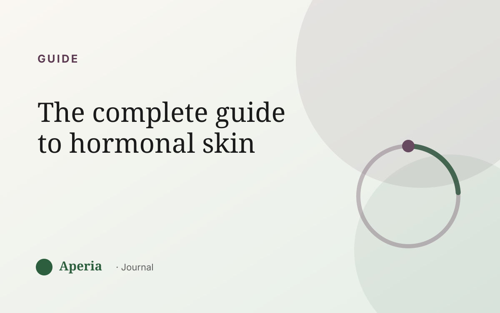
Guide
The complete guide to hormonal skin
The cycle, the zones, the four inputs, and how to read your own skin — everything in one place.
Read the guide →The Journal
Plain-language guides to hormonal skin, breakouts and the patterns behind them — no hype, no fear, just how to finally read your own skin.

The cycle, the zones, the four inputs, and how to read your own skin — everything in one place.
Read the guide →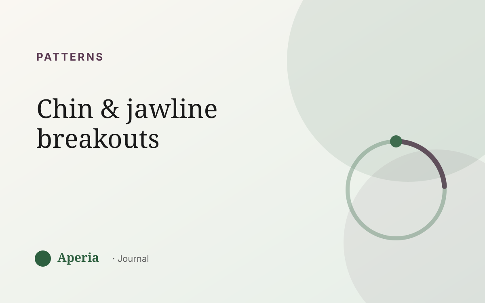
The most hormonally reactive zone on your face — and what it's telling you.
Read →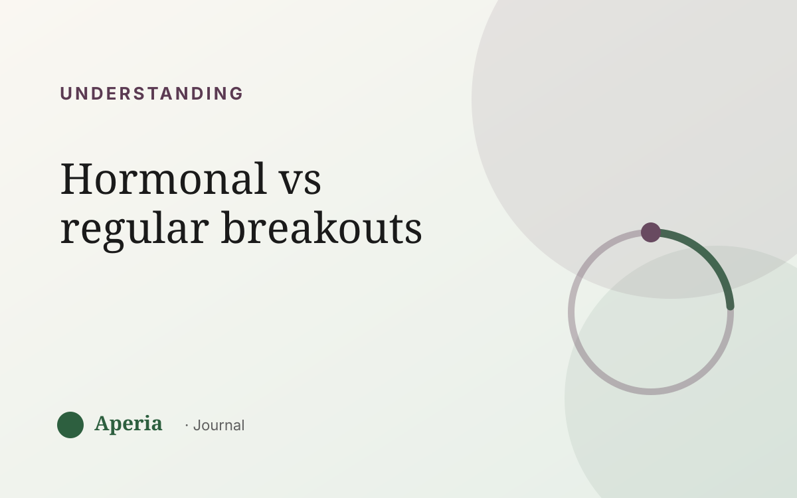
How to tell the difference by timing, place and pattern.
Read →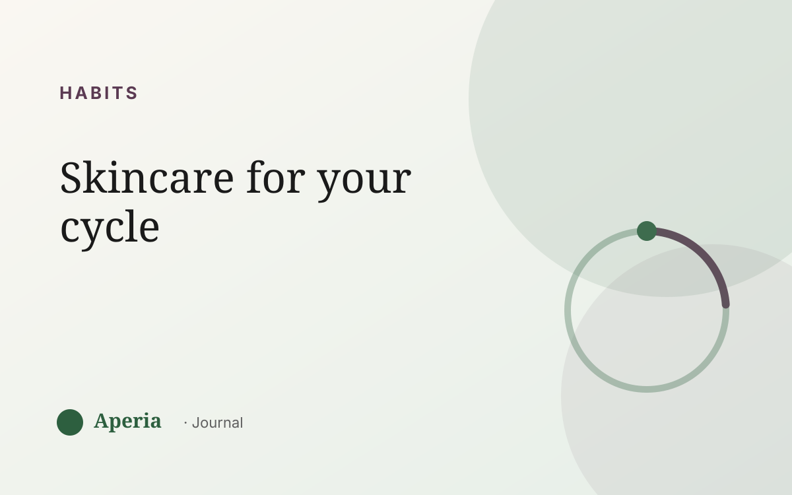
What your skin needs across the month — without overhauling everything.
Read →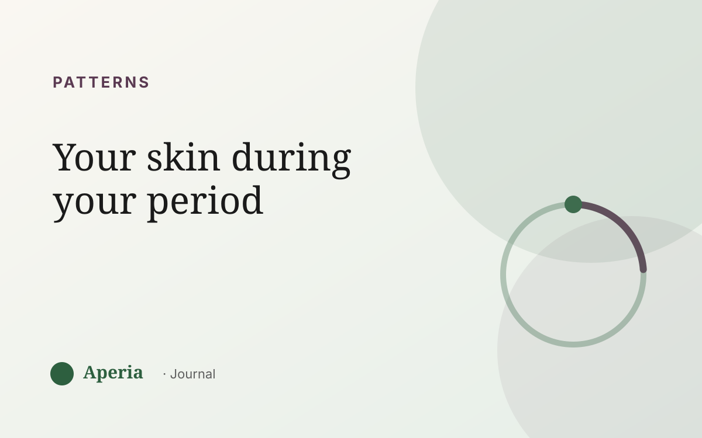
The premenstrual flare, the period itself, and the days after.
Read →Why hard weeks show up on your face — and what helps.
Read →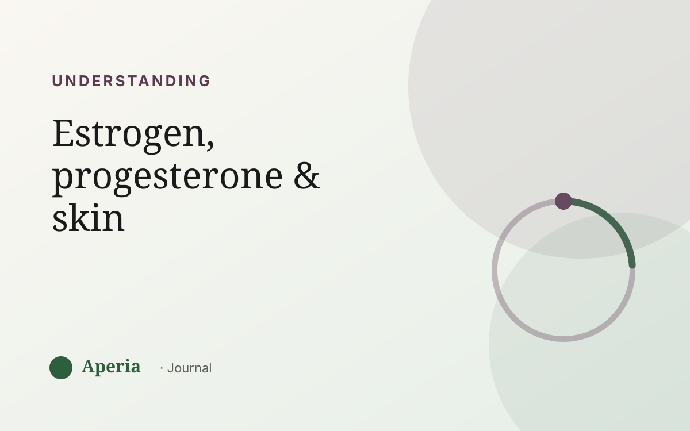
The two hormones behind your monthly skin rhythm.
Read →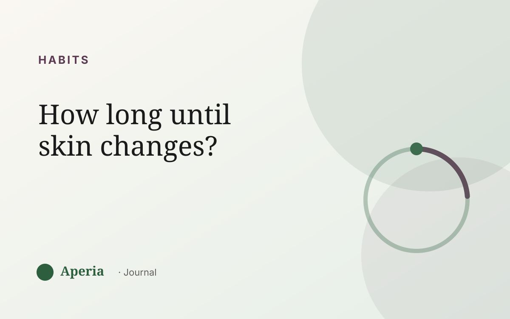
Why one month isn't enough — and how to measure real progress.
Read →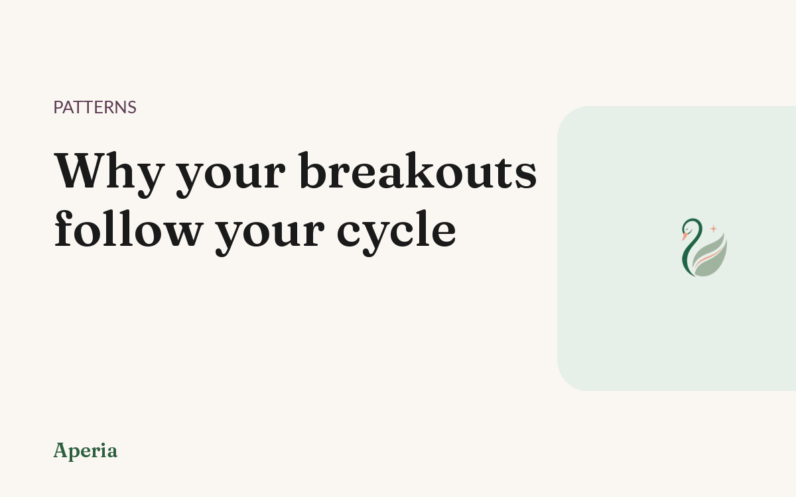
The same week, the same spots. What that rhythm is telling you — and how to read it.
Read →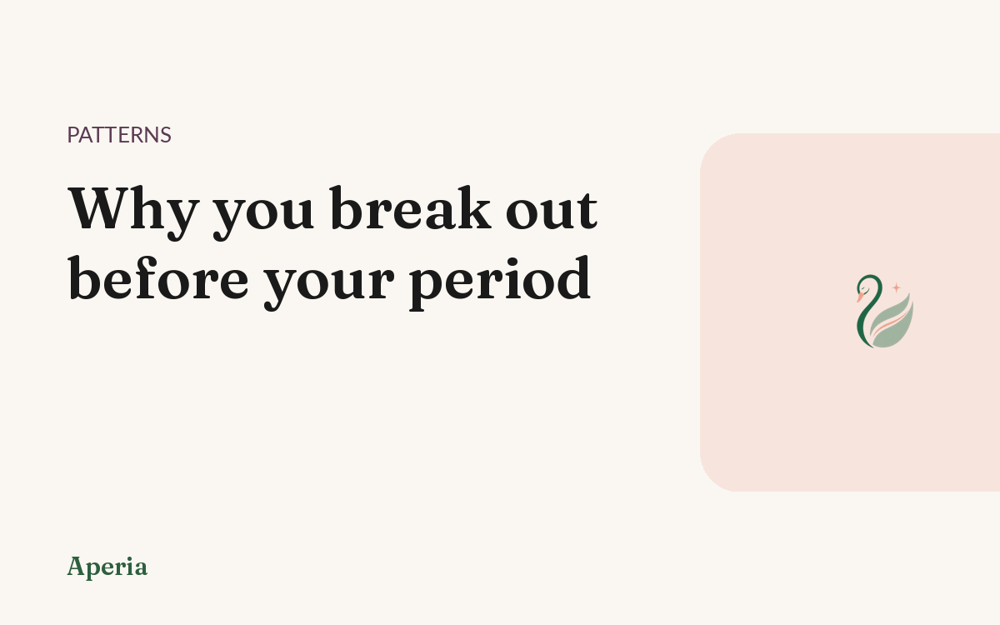
Same week, same spots, every month. What that premenstrual flare is telling you.
Read →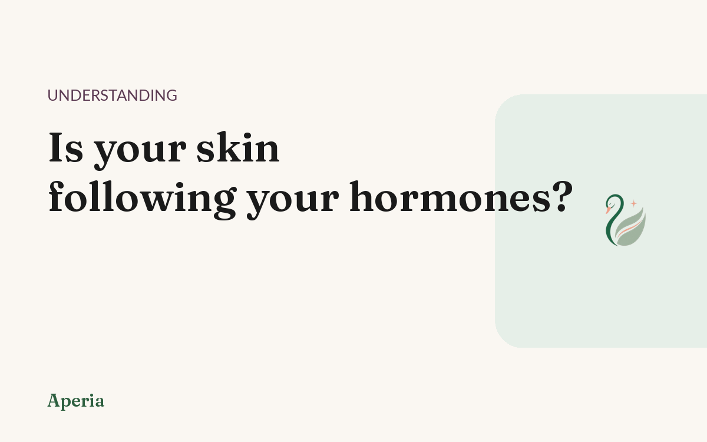
The everyday signs your skin follows your cycle — and how to find out for sure.
Read →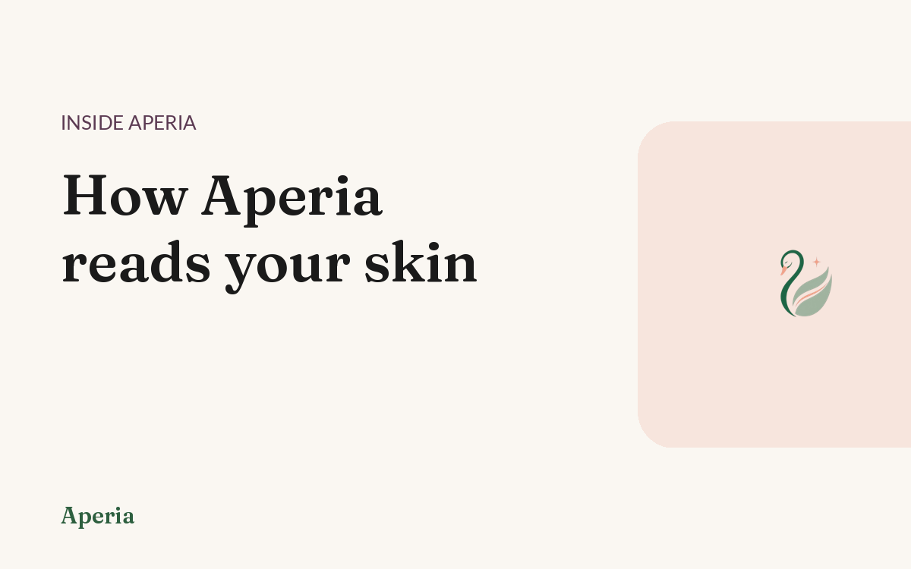
What a zone-by-zone skin score actually measures, and why it changes day to day.
Read →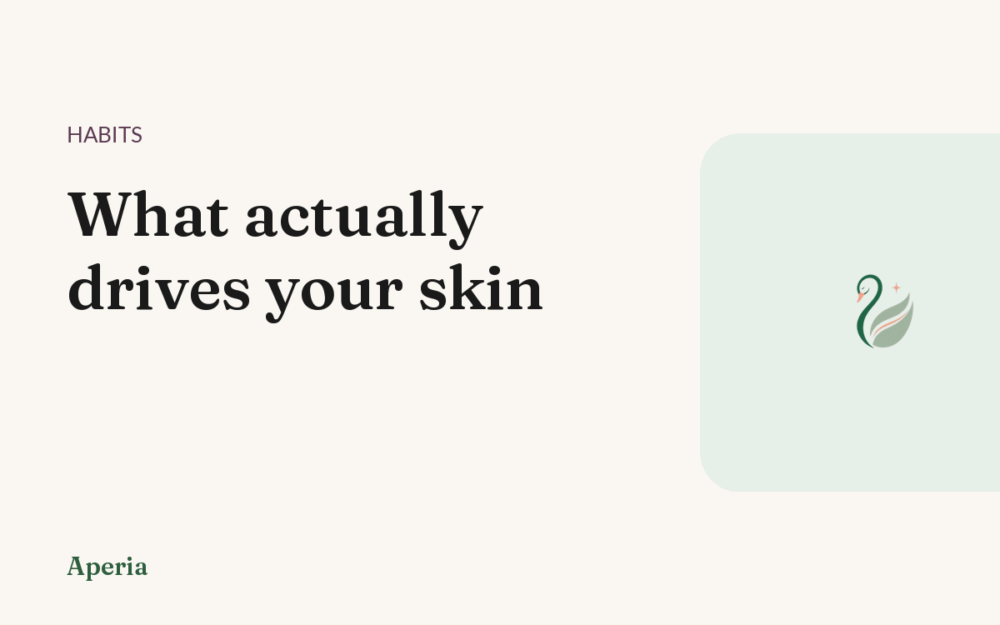
Sleep, stress, food, cycle. Four inputs, tracked in seconds, that explain most of it.
Read →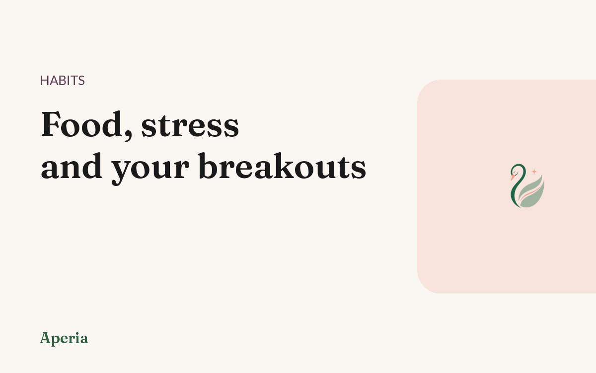
It depends on you. How to find your own triggers instead of guessing from a list.
Read →Deep-dive guides: your cycle, products & breakouts → · Cycle skin calculator →